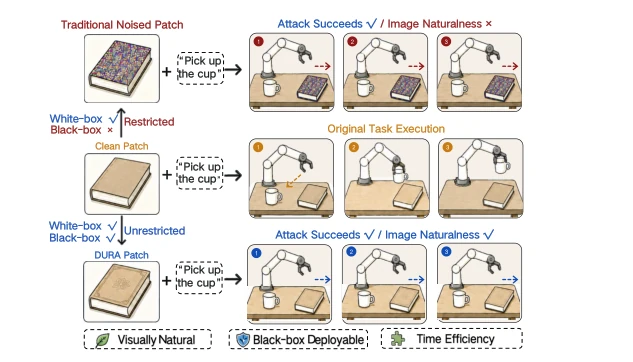
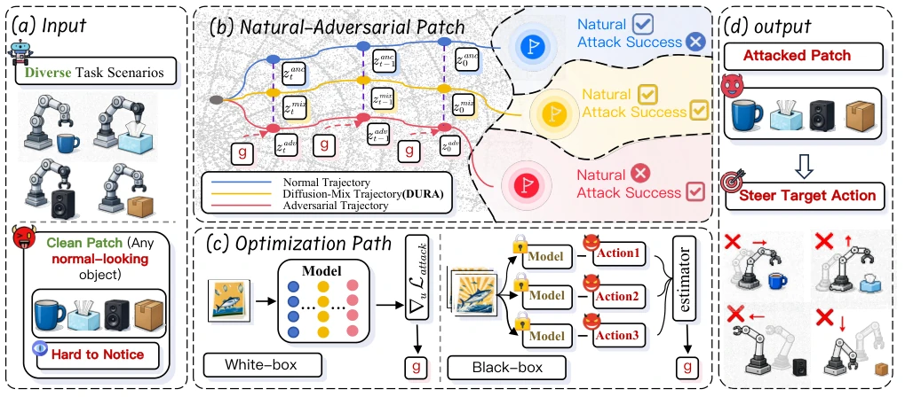
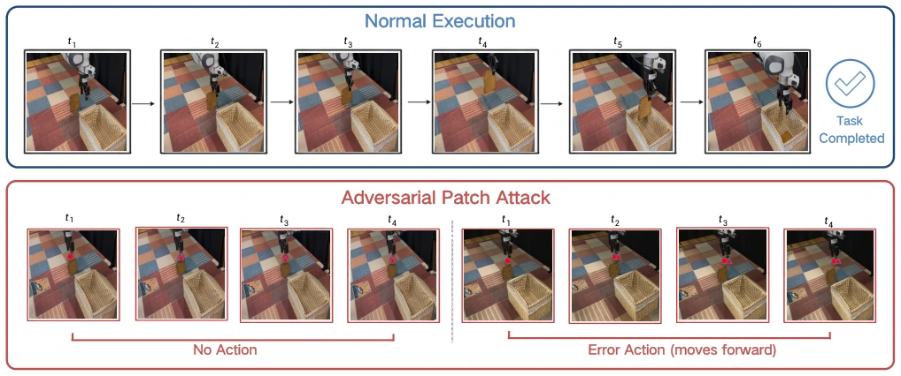
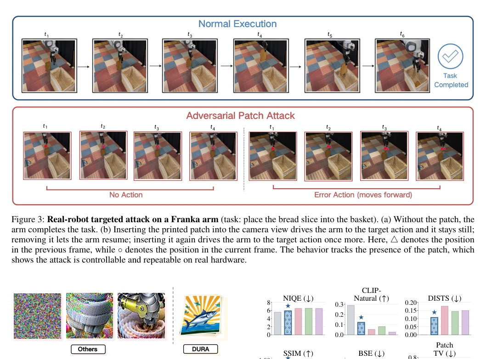
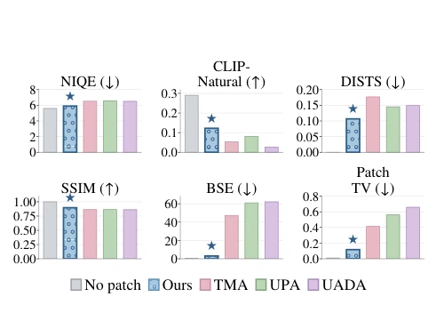
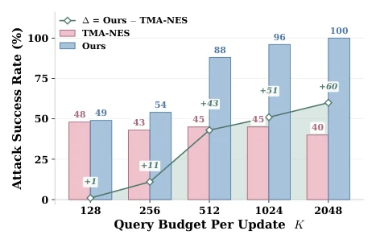
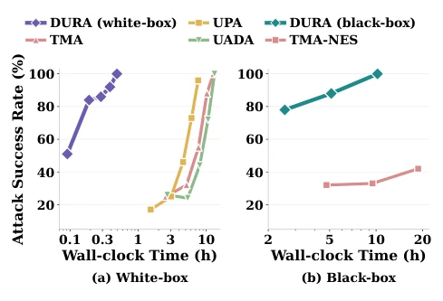
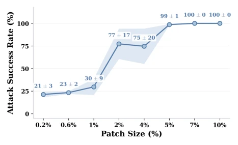
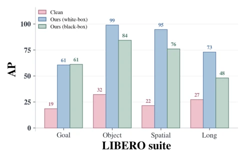
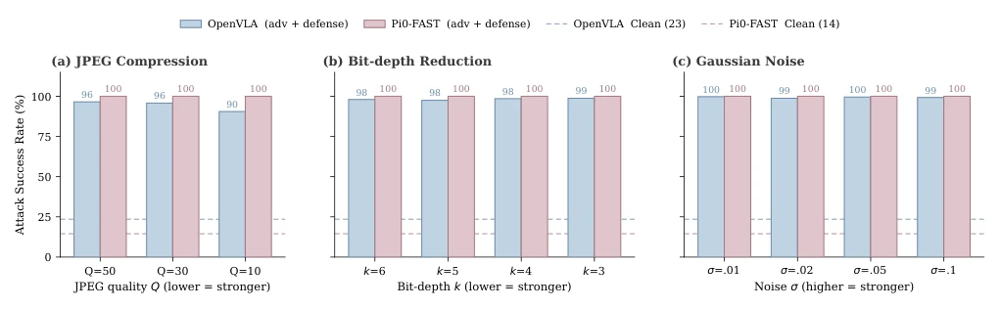

This paper sounds the alarm bell for VLA model security; DURA's tactic of 'repairing the plank road while secretly crossing the Qian valley' is quite adept. It utilizes diffusion models to generate seemingly normal stickers, causing robots to 'obediently' commit malicious acts, which is much more covert than traditional mosaic-style attacks. It handles both white-box and black-box scenarios and can run on real machines, indeed demonstrating VLA's vulnerability. However, the attack cost is not low, with many black-box queries required, and it relies on diffusion model priors; if the robot encounters an unseen scene, will the sticker still be effective? After all, real-world lighting and angles vary endlessly, and stickers printed in the lab may not work as well on real machines. Overall, this is a polished red team test, but do not expect it to directly become a hacker tool; the defense side must catch up quickly, not just focusing on model parameters, but also examining 'natural' content in the physical world.
研究动机Motivation
VLA 模型越来越强，但安全性被忽视了。现有攻击主要靠像素级扰动或白盒梯度，现实里很难用。Wang et al. (2025a) 和 FreezeVLA (Wang et al. 2025c) 虽然有效，但补丁太显眼，容易被发现。Lu et al. (2026) 的 UPA-RFAS 等也面临自然度不足的问题。本文想解决三个痛点：视觉自然性（别让人一眼看出是攻击）、黑盒可部署性（不用知道模型参数）、时间效率（别优化太久）。现有方法往往在仿真里跑得好，真机部署就露馅，或者需要知道模型内部参数，这对闭源系统不友好。我们需要一种既能骗过 VLA，又能藏在普通物体里的攻击，这才是真正的物理威胁。
VLA models are becoming increasingly powerful, but security is neglected. Existing attacks mainly rely on pixel-level perturbations or white-box gradients, which are difficult to use in reality. Wang et al. (2025a) and FreezeVLA (Wang et al. 2025c) are effective, but the patches are too conspicuous and easily discovered. Lu et al. (2026)'s UPA-RFAS, etc., also face issues of insufficient naturalness. This paper aims to solve three pain points: visual naturalness (don't let people see it's an attack at a glance), black-box deployability (no need to know model parameters), and time efficiency (do not optimize for too long). Existing methods often perform well in simulation but fail on real machine deployment, or require knowledge of internal model parameters, which is unfriendly to closed-source systems. We need an attack that can both fool VLA and hide within ordinary objects; this constitutes a true physical threat.

Figure 1: An illustration of unrestricted patch attacks on a VLA robot (“pick up the cup”). Top: a traditional noised patch stalls the arm but is conspicuous and white-box only. Bottom: our DURA patch stalls the arm while being visually natural, black-box deployable, and semantically consistent.
DURA's core lies in optimizing patches within the diffusion model's latent space. Process: 1. Select a clean seed patch, encode into latent. 2. Add noise to intermediate step tstart. 3. Precompute a clean trajectory as an anchor. 4. Iterative denoising, mixing the current adversarial latent and clean anchor at each step. 5. Calculate gradient direction based on white-box/black-box to update latent. White-box directly backpropagates VLA loss; black-box uses score-function to estimate gradient (based on action queries). Finally, decode to obtain the patch. Innovations lie in using diffusion priors to guarantee naturalness, using mixed trajectories to prevent drift, and unifying the white-box/black-box framework. Specifically, it does not directly optimize pixels but operates in VAE latent space, utilizing the DDIM denoising path as a naturalness constraint. Regarding attack direction estimation, white-box uses gradients, black-box uses sampling queries, estimating gradient direction via Formula 9. This design ensures the patch resembles an ordinary object while precisely controlling robot actions.

Figure 2: The overall framework of DURA, which consists of (a) constructing diverse task scenarios with normal-looking clean patches, (b) generating natural-looking adversarial patches through diffusion-mixed trajectories, (c) optimizing the patches in either white-box or black-box settings, and (d) using the resulting adversarial patches to steer the robot toward attacker-specified target actions.
Evaluated on OpenVLA and π0-FAST, LIBERO simulation + Franka real machine. Baselines include UMA, UPA, TMA, etc. Metrics include ASR and naturalness. Results: White-box 100%, Black-box physical environment 79.3%, far exceeding TMA-NES. Naturalness metrics (NIQE, CLIP) DURA is best. Time efficiency is also high. Ablation experiments examine query count K; K=512 is quite good. Patch size 2% area saturates. Real machine experiments show that with the sticker, the robot stops or moves randomly; removing it restores normal function, indicating the attack is controllable. This proves diffusion-generated patches remain effective in the physical world, not simulation hallucinations.

Figure 3: Real-robot targeted attack on a Franka arm (task: place the bread slice into the basket). (a) Without the patch, the arm completes the task. (b) Inserting the printed patch into the camera view drives the arm to the target action and it stays still; removing it lets the arm resume; inserting it again drives the arm to the target action once more. Here, △denotes the position in the previous frame, while ◦denotes the position in the current frame. The behavior tracks the presence of the patch, which shows the attack is controllable and repeatable on real hardware.

Figure 4: Qualitative comparison of adversarial patch nat- uralness. From left to right, we show patches generated by UADA, UPA, TMA, and DURA under the main experimental configuration. Compared with the noise-like or visually ir- regular patterns produced by the baselines, the DURA patch exhibits a more coherent appearance and recognizable se- mantic content.

Figure 5: Visual naturalness comparison. The figure re- ports six visual-quality metrics for DURA(⋆), TMA, UPA, and UADA, together with the no-patch clean reference base- line. DURA stays closest to the no-patch baseline among attack methods, indicating better local naturalness and fewer visible artifacts.

Figure 6: Query budget K. Black-box ASR versus query budget K on LIBERO. DURA already achieves a high ASR at K=512 and improves further as the budget increases, whereas TMA-NES remains at a consistently low ASR.

Figure 7: Time efficiency. Time–ASR trade-off on Open- VLA under (a) white-box and (b) black-box access. The x- axis reports single-GPU wall-clock time in hours. DURA reaches high attack success substantially earlier than direct pixel-space optimization baselines in both settings.

Figure 8: Patch size. White-box ASR versus patch size on LIBERO-Spatial; ASR rises past a size threshold and satu- rates.

Figure 9: AP on OpenVLA across four LIBERO suites. Com- pared to the no-patch Clean baseline, our diffusion-guided patch sharply raises AP in both the white-box and black-box settings.
其他图片Other Figures

Figure 10: Robustness to input-transformation defenses (ASR). ASR (%, ↑) averaged over the four LIBERO suites on OpenVLA and π0-FAST under JPEG compression, bit-depth reduction, and Gaussian noise at several strengths.